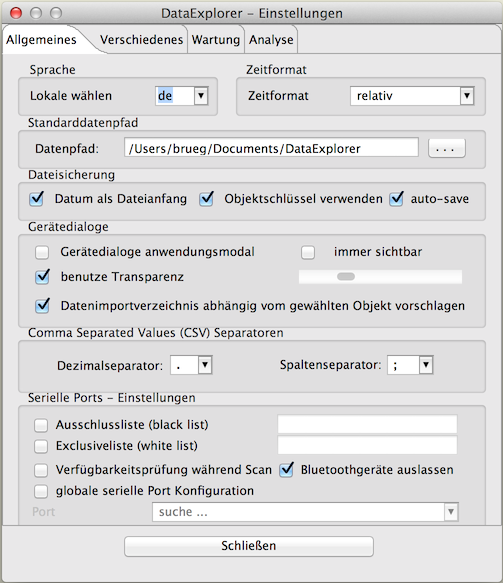
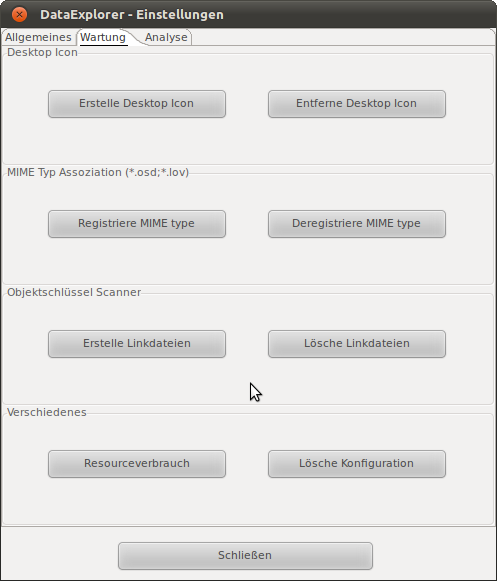
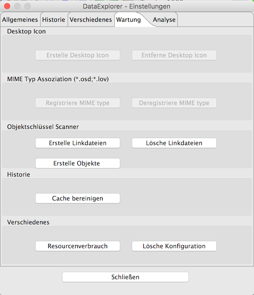

Der Einstellungsdialog
Der Einstellungsdialog dient zum Einstellen:
- Des Datenpfades, das Verzeichnis unter dem die
gerätespezifischen Logdatendateien abgelegt werden sollen, hier
sucht das Programm entsprechend dem eingestellten Gerät die
Datendateien, sowie die Objektdatendateilinks.
- der Dateisicherungsdialog kann als Anfangsdateiname das
aktuelle Datum und/oder einen Objektschlüssel vorschlagen. Das erleichtert die Auffindbarkeit von Dateien.
- Verhalten der Gerätedialoge: Ein programmmodales
Verhalten ist manchmal unpraktisch, wenn man parallel zu einer
Datensammelaktion Einstellungen vornehmen möchte.
- Des Dezimalseparator- und Listenseparator-Zeichens, anders als
durch die Systemlokalen vorgegeben kann man hier Einstellungen
vornehmen um mit eventuell verwendeten Tabellenkalkulationsprogrammen
eine Zusammenarbeiten herzustellen. Diese Einstellung wirkt sich auch
auf den Export, bzw. Import von CSV Dateien, nicht aber die durch den CSV2SerialAdapter Datenformat ausgewerteten, aus.

- Mit Black-List- bzw. White-List- Einstellungen kann man sein persönliches System, in Bezug auf problematisch Ports, konfigurieren.
Diese Einstellungen gelten dann auch für den Geräteauswahldialog.
Die Ausschlussliste ignoriert darin angegebene Ports, während die Exklusivliste die aufgelisteten Ports ausschließlich anspricht.
Hier kann es aber, bei wechselnden Ports durch "Plug And Play" dazu kommen, dass die konfigurierten Ports nicht mehr in der Auswahl erscheinen, da sie vom System automatisch umkonfiguriert wurden.
- Wird ein globaler serieller Port ausgewählt sucht der Dialog automatisch nach
verfügbaren seriellen Anschlüssen und blendet das Ergebnis
möglicherweise etwas zeitverzögert ein. Diese
Zeitverzögerung kann man auf langsamen Windows basierten Systemen
reduzieren, in dem man die Verfügbarkeitsabfrage abschaltet. Dann
werden belegte Ports halt auch angezeigt und können eventuell
später nicht benutzt werden. Der serielle Port kann dafür
aber für das Gerät gesichert werden. Auf UNIX basierten
Systemen spielt das, zeitlich gesehen, keinen Rolle. Diese Einstellung
wirkt sich auch auf den Geräteauswahldialog aus, der seinerseits
auch nach verfügbaren serielle Ports sucht.
Hinweis: Bei Windows werden Bluetooth-Ports ausgeblendet, es kommt hier mit dem verwendeten RXTXcomm Paket zu Funktionseinschränkungen!
- wenn es systemweit nur einen seriellen Anschluss (Port) gibt,
kann man hier die globale Einstellung vornehmen, meist sucht sich das
Programm aber selbst den seriellen Port zur Gerätekommunikation.
Der Dialog sucht beim Öffnen nach seriellen Anschlüssen und
blendet das Ergebnis möglicherweise etwas zeitverzögert ein.
Diese Einstellung wirkt sich auch auf den Geräteauswahldialog aus,
der dann die Portauswahl sperrt.
Über den Tabulator "Wartung" kann man das Desktop-Starter-Icon erneut erstellen, bzw. entfernen.
Ebenso kann hier die DataExplorer MIME Typ Assoziation zu den Dateiendungen *.osd und *.lov registriert, bzw. entfernt werden.
Für MAC OS wird das nicht unterstützt, bzw. ist es unnötig.

Die Taste "Erstelle Linkdateien" erzeugt von allen OSD Dateien die dazugehörigen, fehlenden Objektverzeichnisse und Linkdateien zu den jeweiligen Datendateien.
Die Taste "Lösche Linkdateien" löscht alle Linkdateien in den Objektverzeichnissen aber nicht die Verzeichnisse und Objektbeschreibungen.
Nicht verändert werden dabei die Dateien, die die Objektbeschreibung enthält.
Beide Funktionen sind sehr praktisch, wenn man Anwendungsdatendateien auf eine andere Ausführungsplattform umziehen oder sichern möchte.
%Uuml;ber die Taste "Resourcenverbrauch" wird in die aktuelle trace.log Datei die Anzahl von Betriebssystemhandles für die einzelnen verwendeten Programmobjekte geschrieben.
Durch drücken der Taste "Lösche Konfiguration" wird der DataExplorer so konfiguriert, dass er beim Beenden sämtliche Konfigurationsdateien, falls vorhanden Betriebssystemeinträge
und Starter-Icon entfernt. Danach kann die Anwendung spurenfrei entfernt oder durch Neustart initial konfiguriert werden.
Über den Analyse Tabulator erreicht man Einstellmöglichkeiten für
eine Fehleranalyse. Nach einem Programmabsturz sollte in einer trace.log
Datei eine mögliche Erklärung zu finden sein. Achtung, alle
Verstellungen der Loglevel haben einen Einfluss auf die Laufzeit und das
kann zu nicht absehbaren Nebeneffekten führen. Alle Einstellungen
sollten mit diesem Wissen vorgenommen werden. Die Werte sind
entsprechend der Informationsfülle gestaffelt,
- SEVERE schreibt nur Programmfehler,
- WARNING schreibt Fehler und Warnungen,(ist die Normaleinstellung)
- TIME schreibt Fehler, Warnungen und Ausführungszeiten
- INFO schreibt Fehler, Warnungen, Zeit und Informationen
- FINE schreibt Fehler, Warnungen, Zeit, Informationen und Logs des Levels FINE
- FINER schreibt noch mehr als FINE
- FINEST schreibt noch mehr als FINER
Der untere Abschnitt ermöglicht die Einstellung der Loglevel auf bestimmte Bereiche oder klassenbasiert.
Ohne besonderen Grund sollte man auch hier nicht unbedingt über den Level FINE einstellen, sonst werden die Logdaten unübersichtlich.
- die globale Einstellung des "trace log" Levels, im
Normalfall ist das WARNING
- grafische Oberfläche, hiermit sind alle Programmteile
eingeschlossen, die mit den Hauptfenstern des Programms zu tun haben
- Geräte, hiermit sind alle Programmteile gemeint, die
über den Gerätedialog angesprochen werden
- Datenmodell, beschreibt den Anteil den Programmcodes, der mit
der internen Datenstruktur zu tun hat
- allgemeine Funktionen sind die Programmteile die überall
verwendet werden können, also Hilfsfunktionen um Kurven zu
zeichnen, wie die Berechnung einer Checksumme oder die
Skalierungsteilung von Skalen
- für die serielle Schnittstelle, über dem Level INFO,
wird ein Memorylogger verwendet, der den geringsten Laufzeiteinfluss
hat. Logischerweise steigt dadurch der Speicherverbrauch der Anwendung.
Im Bedarfsfall kann das Programm dann etwa mit "java -jar -Xmx512m
DataExplorer.jar" gestartet werden, wobei der maximale
Speicherverbrauch der Java Virtual Machine auf 512 Megabyte begrenzt
ist.

Der klassenbasierte Loglevel erlaubt den logging Level auf ausgewählte Klassen zu reduzieren.
Hierdurch wir die Ausgabe übersichtlicher und erlaubt die Analyse weiter einzuschränken.
Die Selektion des Loglevels wir über ein Kontextmenü erreicht.
Erst durch schließen des Dialogs wird die Einstellung wirksam.
In jedem Fall werden immer nur drei Tracelogdateien mit einigen
Megabyte Größe geschrieben. Die Dateien überschreiben
sich dann immer wieder selbst.
Hinweis: Im Fehlerfall immer mal wieder einen Blick in das
Logs Verzeichnis werfen, hier können wertvolle Hinweise zu für
die Fehleranalyse zu finden sein (siehe Verwendete Verzeichnisse).
<<== zurück
weiter ==>>